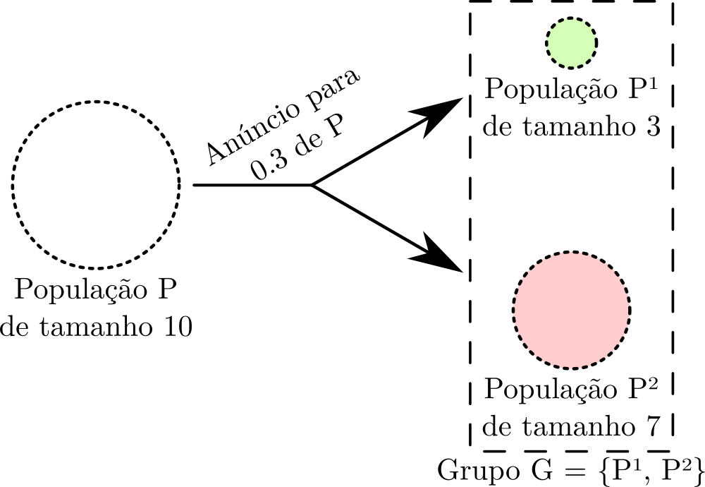

PPAL
Populational Announcement Logic
Uma lógica dinâmica epistêmica com semântica fuzzy e populações
Dissertação de mestrado de Vitor Machado, orientado pelo Prof. Mario Benevides
Representação do conhecimento
É a área que estuda modelos e sistemas para representar e raciocinar sobre conhecimento.
“Representação de conhecimento é a aplicação de lógica e ontologia à tarefa de construir modelos computáveis para algum domínio” - John Sowa, inventor dos gráficos conceituais
Lógica epistêmica
Representação do conhecimento tem pouco propósito se não é possível raciocinar sobre o mesmo.
Lógicas epistêmicas são sistemas formais para lidar com representação de conhecimento. Algumas de suas ideias mais básicas, em especial no campo da filosofia, vem dos tempos da Grécia antiga.
Objetivo
Especificar uma variante de Public Announcement Logic (PAL), onde o conhecimento é representado sobre populações e grupos, ao invés de sobre agentes discretos como é comumente feito na literatura.
Motivação
Prover um framework mais fácil de se trabalhar, voltado para especificação de cenários mais próximos da realidade. Permitir evolução dinâmica das populações também, não só do conhecimento das mesmas.
Roteiro
1. Para atingir os objetivos, foi especificada uma variante "fuzzyficada" de PAL que permite anúncios parciais para suas populações. Formalizações para o modelo, linguagem e semântica são providas, bem como exemplos;
2. Foi construída também uma prova de decidibilidade da linguagem para modelos finitos, um resultado importante para verificação de modelos;
3. Foi desenvolvida ainda uma biblioteca e verificador de modelos desenvolvidos em Java que implementam a linguagem da lógica.
ENIAC 2015
Um artigo derivado desse trabalho foi aceito no Encontro Nacional de Inteligência Artificial e Computacional (ENIAC), conferência ocorrida em Natal - RN. O artigo encontra-se publicado na Biblioteca Digital Brasileira de Computação (BDBComp).BRACIS 2016
Artigo submetido também à Brazilian Conference on Intelligent Systems (BRACIS), aguardando revisão.Lógica epistêmica multi-agente
É uma generalização da lógica modal onde existem agentes, e operadores de conhecimento para os mesmos ($K$ e $B$, conhecimento e crença respectivamente), e expressões como $K_a \varphi$ (agente $a$ sabe $\varphi$) podem ser escritas.
Linguagem
$$ \varphi ::= p \ | \neg \varphi \ | \ \varphi_1 \land \varphi_2 \ | \ \varphi_1 \lor \varphi_2 \ | \ \varphi_1 \to \varphi_2 \ | \ K_a \varphi $$
Semântica
\[\begin{aligned} {\cal M},s \models p & \leftrightarrow s \in V(p) \\ {\cal M},s \models \neg \phi & \leftrightarrow {\cal M},s \not \models \phi \\ {\cal M},s \models \phi \land \psi & \leftrightarrow {\cal M},s \models \phi \ \text{and} \ {\cal M},s \models \psi \\ {\cal M},s \models \phi \lor \psi & \leftrightarrow {\cal M},s \models \phi \ \text{or} \ {\cal M},s \models \psi \\ {\cal M},s \models \phi \to \psi & \leftrightarrow {\cal M},s \not\models \phi \ \text{or} \ {\cal M},s \models \psi \\ {\cal M},s \models K_a \phi & \leftrightarrow \forall s' \in S: s \sim_a s' \Rightarrow {\cal M},s' \models \phi \\ \end{aligned} \]
Exemplo (jogo de cartas)
Suponha três jogadores, $a$, $b$ e $c$, e cartas $0$, $1$ e $2$. Usamos, por exemplo $1_a$ para dizer que o jogador $a$ possui a carta $1$.
Os estados serão nomeados como a carta de cada jogador, em ordem. Por exemplo, no estado $012$, jogador $a$ tem a carta $0$, $b$ tem $1$ e $c$ tem $2$. O estado real é sublinhado.

Modelo $Hexa$: jogo de cartas
Lógica de anúncios públicos (PAL)
Operador $[ \dots ]$ de anúncio público altera o modelo, reduzindo as arestas entre os estados. $[ \phi ] \varphi$ tem o significado de "após anúncio de $\phi$, $\varphi$ é verdadeiro".

Modelo $Hexa$ (esquerda); Modelo $Hexa_2 := Hexa | \neg 1_a$ (direita)
Para o anúncio $Hexa, 012 \models [ \neg 1_a ] K_c 0_a$, precisamos checar $K_c 0_a$ em $Hexa_2$.
Populational Announcement Logic (PPAL)
Nesse trabalho a Lógica de Anúncios Populacionais foi especificada, e nos próximos slides veremos mais detalhes sobre sua sintaxe e semântica, bem como exemplos.
Populações e grupos
Nesta lógica, introduzimos conceitos de populações e grupos ao invés de agentes. Anúncios agem sobre frações de populações/grupos, criando novos grupos a partir deles.
Definição: Uma população representa um conjunto de indivíduos. Uma população $P$ possui tamanho $\overline{P} \in \mathbb R_{>0}$.
Definição: Um grupo pode ser vazio, uma população ou um conjunto disjunto de grupos:
$G := \emptyset \ | \ P \ | \ \{ G_0, G_1, \dots, G_n \}$
Modelo (População)
Como veremos adiante, anúncios agem sobre frações de populações/grupos, dessa forma criando diferentes "mundos" para quem recebeu ou não o anúncio. Por esse motivo, o conceito de "muitos mundos" é aplicado.
Definição: Um modelo para uma população $P$ é composto de:
- Um conjunto de estados $T$;
- uma função de valoração $V : \Phi \to 2^T$ que indica proposições verdadeiras para cada estado;
- Uma família de relações binárias $\stackrel{M_P, G}{\sim}$ para cada grupo $G$ conhecido por esta população.
Modelo (Grupo)
Definição: Um modelo para um grupo $G= \{ G_0, G_1, \dots, G_n \}$ é definido como o conjunto de modelos de cada um dos seus grupos. Isto é, $M_G = \{ M_{G_0}, M_{G_1}, \dots, M_{G_n} \}$.
Linguagem
\[ \varphi ::= p \ | \ \neg \varphi \ | \ \varphi_1 \wedge \varphi_2 \ | \ \varphi_1 \vee \varphi_2 \ | \ \varphi_1 \rightarrow \varphi_2 \ | \\ K_G \varphi \ | \ B_G \varphi \ | \ [\varphi_1]_G^r \varphi_2 \] onde $r \in U = [0, 1]$, $G$ denota um grupo e $p \in \Phi$.
Operadores de conhecimento e anúncio
- $K_G \varphi$ e $B_G \varphi$: "o grupo $G$ sabe/acredita que $\varphi$ vale";
- $[\varphi_1]_G^r \varphi_2$: "$\varphi_2$ vale no grupo $G$ após anúncio de $\varphi_1$ para fração $r$ dos indivíduos em $G$", onde $G = \{ P_1, P_2 \}$ e $\overline{P_1} = \overline{G} \cdot r$.
- Essa expressão descreve um anúncio parcial que define duas novas populações, uma delas com conhecimento adicional e outra que não recebeu nenhuma nova informação.
Anúncio
Semântica (Proposição)
Definimos valorações para cada expressão da linguagem, começando pela proposição simples: \[ E_{M_G, s}(p) = e(p, (M_S, s)) \] Ou seja, a proposição é evaluada sobre um modelo e um estado, de acordo com uma função de valoração $e : p \times (M_G, s) \rightarrow U$, que pode ser simplesmente algo como $e(p, (M_S, s)) = 1$ se $p \in V(p)$, e $0$ caso contrário.
Semântica ($\neg$, $\land$, $\lor$, $\to$)
Os outros operadores são definidos utilizando-se de funções, que posteriormente definiremos a partir de suas propriedades. \[\begin{aligned} E_{M_G, s}(\neg \varphi) & = NOT(E_{M_G, s}(\varphi)) \\ E_{M_G, s}(\varphi \wedge \psi) & = AND(E_{M_G, s}(\varphi), E_{M_G, s}(\psi)) \\ E_{M_G, s}(\varphi \vee \psi) & = OR(E_{M_G, s}(\varphi), E_{M_G, s}(\psi)) \\ E_{M_G, s}(\varphi \rightarrow \psi) & = IMP(E_{M_G, s}(\varphi), E_{M_G, s}(\psi)) \end{aligned} \]
Negação Fuzzy
Um operador unário $NOT : U \rightarrow U$ é uma negação fuzzy se:
Por exemplo, uma possível função de negação é $NOT(x) = 1 - x$.
Conjunção Fuzzy
Um operador binário $AND : U \times U \rightarrow U$ é uma conjunção fuzzy se:
Por exemplo, uma possível função de conjunção é $AND(x, y) = min\{x, y\}$.
Disjunção Fuzzy
Um operador binário $OR : U \times U \rightarrow U$ é uma disjunção fuzzy se:
Por exemplo, uma possível função de disjunção é $OR(x, y) = max\{x, y\}$.
Implicação Fuzzy
Um operador binário $IMP : U \times U \rightarrow U$ é uma implicação fuzzy se:
Por exemplo, uma possível função de implicação é $IMP(x, y) = min\{1, 1 - x + y\}$, também conhecida como implicação de Łukasiewicz (originária da lógica fuzzy de mesmo nome).
Conhecimento Fuzzy
Um operador ternário $K : \phi \times (M_S, S) \times G \rightarrow U$ é uma checagem de conhecimento fuzzy se:
Conhecimento Fuzzy (Função)
Por exemplo, uma possível função de checagem de conhecimento é $$K(\varphi, (M_S, s), G) = \left\{ \begin{array}{ll} \sum_{G' \in G} \frac{\overline{G'}}{\overline{G}} K(\varphi, (M_S, s), G') & \text{se} \ G = \{ G_0, G_1, \dots, G_n \} \text{,} \\ 1 & \text{se} \ G = P \ \text{e} \ \forall s' \in T ~| ~s \stackrel{M_S, P}{\sim} s' \rightarrow E_{M_S, s'}(\varphi) \text{,} \\ 0 & \text{caso contrário.} \end{array} \right.$$
Intuitivamente, significa que o conhecimento de um grupo é igual à média ponderada dos conhecimentos dos grupos contidos nele. Uma única população sabe algo apenas quando é verdadeiro em todo mundo concebível que essa população contempla.
Crença Fuzzy
Um operador ternário $B : \phi \times (M_S, S) \times G \rightarrow U$ é uma checagem de crença fuzzy se:
Crença Fuzzy (Função)
Por exemplo, uma possível função de checagem de crença é $$B(\varphi, (M_S, s), G) = \left\{ \begin{array}{ll} \sum_{G' \in G} \frac{\overline{G'}}{\overline{G}} B(\varphi, (M_S, s), G') & \text{se} \ G = \{ G_0, G_1, \dots, G_n \} \text{,} \\ \sum_{s' \in N_s} \frac{E_{M_S, s'}(\varphi)}{\overline{N_s}} & \text{se} \ G = P \text{,} \\ 0 & \text{caso contrário.} \end{array} \right.$$
onde $N_s = \bigcup_{s' \in T | s \stackrel{M_S, G}{\sim} s'} s'$ são os vizinhos de $s$ via relação $\stackrel{M_S, G}{\sim}$.
Permite qualquer número no intervalo $[0, 1]$. Por exemplo, se em metade dos estados conectados ao estado $s$ via $\stackrel{M_S, P}{\sim}$, $\varphi$ evaluar para $1$ e na outra metade para $0$, então $B(\varphi, (M_S, s), P) = 0,5$.
Exemplo
Veremos agora um exemplo para demonstrar como o modelo evolui, e mostrar passo-a-passo a resolução das evaluações. Os estados são nomeados como o conjunto de proposições que são válidas nos mesmos, para facilitar a visualização.
A motivação para o exemplo é a seguinte: considere um político famoso que está sob investigação por lavagem de dinheiro e pagamento de propina. As eleições estão chegando, e para ser reeleito o político precisa que as pessoas não saibam de ambas as acusações sendo feitas sobre ele.
Modelo inicial
Temos um modelo inicial composto de uma única população $P$, duas proposições $l$ (lavagem de dinheiro) e $b$ (pagamento de propina) e um estado real $\{l, b\}$.
Se perguntarmos quem votaria no político, isto é $E_{M_P, \{ l, b \}}(K_P(l \land b))$, a evaluação será $0$, já que há arestas $P$ conectando o estado $\{l, b\}$ a outros.
Primeiro anúncio
Um programa de TV foi visto por 30% da população, e revelou que o político praticou lavagem de dinheiro. Isso é equivalente ao anúncio $[l]^{0.3}_G$, onde $G = \{P^1, P^2\}$ é um grupo contendo as populações resultantes do anúncio: $P^1$ recebeu o mesmo, e $P^2$ não.
Primeiro anúncio, $K$
Se perguntarmos agora $E_{M_P, \{ l, b \}}([l]^{0.3}_G K_G(l \land b))$, a evaluação nesse momento será $0$, já que ainda existem arestas $P^1$ e $P^2$ conectando o estado $\{l, b\}$ a outros. Isto é, ambas as populações estão em dúvida quanto ao estado $\{l, b\}$ ser o real ou não.
Primeiro anúncio, $B$
Podemos também verificar a crença da população, isto é, evaluar $E_{M_P, \{ l, b \}}([l]^{0.3}_G B_G(l \land b))$.
Primeiro anúncio, $B$
\begin{equation} \begin{aligned} B(l \land b, (M_G, \{ l, b \}), G) &= \sum_{G' \in G} \frac{\overline{G'}}{\overline{G}} B(l \land b, (M_G, \{ l, b \}), G') \\ = 0.3 \sum_{s' \in N_{\{ l, b \}}} \frac{E_{M_{P^1}, \{ l, b \}}(l \land b)}{\overline{N_{\{ l, b \}}}} &+ 0.7 \sum_{s' \in N_{\{ l, b \}}} \frac{E_{M_{P^2}, \{ l, b \}}(l \land b)}{\overline{N_{\{ l, b \}}}} \\ = 0.3 \cdot 1/2 + 0.7 \cdot 1/4 &= 0.325 \end{aligned} \end{equation}
Segundo anúncio
Considere novamente que outro programa de TV foi ao ar, dessa vez com 40% de cobertura da população total inicial. Nesse programa foi anunciado que o político praticou pagamento de propina, isto é, $[b]^{0.4}_G$.
Segundo anúncio (modelo)
O modelo resultante dos anúncios seguidos é como o da imagem:
Modelo $G^1$ à esquerda: acima recebeu ambos os anúncios ($P^{11}$), abaixo apenas o primeiro ($P^{12}$);
Modelo $G^2$ à direita: acima recebeu apenas segundo anúncio ($P^{21}$), abaixo nenhum ($P^{22}$).
Segundo anúncio, $K$
Poderíamos perguntar agora $E_{M_P, \{ l, b \}}([l]^{0.3}_G [b]^{0.4}_{G'} K_{G'}(l \land b))$.
Segundo anúncio, $K$
\begin{equation} \begin{aligned} &K(l \land b, (M_G, \{ l, b \}), G) \\ &= \sum_{G' \in G} \frac{\overline{G'}}{\overline{G}} K(l \land b, (M_G, \{ l, b \}), G') \\ &= 0.3 ( 0.4 \cdot 1 + 0.6 \cdot 0) \\ &+ 0.7 ( 0.4 \cdot 0 + 0.6 \cdot 0) \\ &= 0.3 \cdot 0.4 = 0.12 \end{aligned} \end{equation}
Verificador de modelos

Uma biblioteca e verificador de modelos para a PPAL foram implementados em Java. A biblioteca foi coberta extensivamente por testes unitários e de integração para garantir consistência com a especificação da lógica.
Objetivos
- Implementar um verificador de modelos básico para a lógica PPAL;
- Desenvolver um formato para especificação de modelos (estruturas de Kripke) simples e conciso.
Formato de especificação
Um dos problemas recorrentes em outros verificadores é o de especificar modelos de entrada. A dificuldade vem da necessidade de se especificar todos os estados e arestas do modelo, e também por constantemente essa especificação ser difícil de ler e pouco intuitiva.
Foi definida uma especificação com estrutura XML para a declaração de modelos, visando intuitividade e escalabilidade.
Exemplo de modelo
<model version = "0.1" name = "Cards game (pop)">
<societies>
<socdef id = "a" name = "Alderaaneans" size="3" />
<socdef id = "b" name = "Bespians" size="5" />
<socdef id = "c" name = "Coruscanti" size="7" />
</societies>
<propositions>
<propdef id = "ah0" name = "a has 0">
<soc id = "a"/>
</propdef>
<propdef id = "bh0" name = "b has 0">
<soc id = "b"/>
</propdef>
<propdef id = "ch0" name = "c has 0">
<soc id = "c"/>
</propdef>
<propdef id = "ah1" name = "a has 1">
<soc id = "a"/>
</propdef>
<propdef id = "bh1" name = "b has 1">
<soc id = "b"/>
</propdef>
<propdef id = "ch1" name = "c has 1">
<soc id = "c"/>
</propdef>
<propdef id = "ah2" name = "a has 2">
<soc id = "a"/>
</propdef>
<propdef id = "bh2" name = "b has 2">
<soc id = "b"/>
</propdef>
<propdef id = "ch2" name = "c has 2">
<soc id = "c"/>
</propdef>
</propositions>
<states>
<comb>
<restrictions>
<!-- Societies must have at least one card -->
<atleast>
<prop id = "ah0"/>
<prop id = "bh0"/>
<prop id = "ch0"/>
</atleast>
<atleast>
<prop id = "ah1"/>
<prop id = "bh1"/>
<prop id = "ch1"/>
</atleast>
<atleast>
<prop id = "ah2"/>
<prop id = "bh2"/>
<prop id = "ch2"/>
</atleast>
<!-- Different societies can't have the same card -->
<mutex>
<prop id = "ah0"/>
<prop id = "bh0"/>
<prop id = "ch0"/>
</mutex>
<mutex>
<prop id = "ah1"/>
<prop id = "bh1"/>
<prop id = "ch1"/>
</mutex>
<mutex>
<prop id = "ah2"/>
<prop id = "bh2"/>
<prop id = "ch2"/>
</mutex>
<!-- Societies must have at most one card -->
<mutex>
<prop id = "ah0"/>
<prop id = "ah1"/>
<prop id = "ah2"/>
</mutex>
<mutex>
<prop id = "bh0"/>
<prop id = "bh1"/>
<prop id = "bh2"/>
</mutex>
<mutex>
<prop id = "ch0"/>
<prop id = "ch1"/>
<prop id = "ch2"/>
</mutex>
</restrictions>
</comb>
</states>
<realstate>
<prop id = "ah0"/>
<prop id = "bh1"/>
<prop id = "ch2"/>
</realstate>
</model>
Decidibilidade
Um aspecto importante da verificação de modelos é a decidibilidade, que está relacionada com o problema de parada: existe alguma fórmula na linguagem que pode fazer o verificador ficar preso em um loop?
É possível mostrar através de indução no tamanho das expressões BNF que a lógica é de fato decidível.
Conclusão
Nesse trabalho foi definida uma variante "fuzzy" de PAL que permite anúncios parciais para populações/grupos (os "agentes").
A maior vantagem da lógica é a flexibilidade de não ter que trabalhar com agentes definidos previamente. É possível definir agentes e evoluí-los de uma maneira mais natural a partir de anúncios.
A lógica também constrói sobre a noção de "dinâmico", pois não apenas as relações de acessibilidade mudam, mas também os próprios agentes.
Trabalhos futuros (axiomatização)
Um formalismo importante para lógicas é o da axiomatização, isto é, um conjunto de tautologias (fórmulas que são sempre verdadeiras), chamadas axiomas, que podem ser usadas para derivar todas as outras fórmulas na linguagem.
Trabalhos futuros (verif. simbólica)
Não foi tentada a verificação de modelos simbólica. Um verificador é "simbólico" quando ele não representa todos os estados do modelo individualmente, e ao invés disso possui representações de conjuntos de estados e fórmulas para relações de transição, o que pode melhorar muito a performance.
Uma possível aproximação para essa técnica é via uso de "binary decision diagrams" (BDD), estruturas compactas que possibilitam checar evaluações em funções booleanas, e funções equivalentes são unicamente representadas.